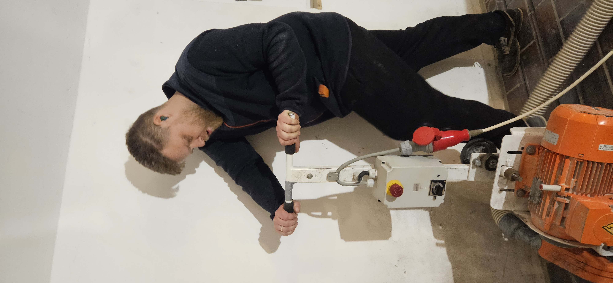

Penner Frästechnik ist ein Ein-Mann-Betrieb aus Neuwied. Andre Penner fräst, verlegt und übergibt jeden Auftrag persönlich — mit eigener Maschine, eigenen Händen, eigener Verantwortung.

Ich habe Penner Frästechnik gegründet, weil ich gesehen habe, wie viele Häuser im Westerwald sich nicht sanieren lassen, solange der Eingriff am Boden so brutal ist. Estrich raus, Türen kürzen, Wochen Baustelle — das schreckt jeden ab.
Das Verfahren, das ich heute einsetze, dreht das um: Der Boden bleibt, wo er ist. In den meisten Räumen ist die Heizung innerhalb eines Arbeitstags drin. Ich mache das alleine, sauber, und ich bin derjenige, der morgens bei Ihnen steht.
Wer anruft, spricht mit mir. Wer einen Termin hat, bekommt mich. Wer Fragen hat, bekommt Antworten — keine Ticketnummern.
Industrie-Absaugung direkt am Fräskopf. Flächen werden abgedeckt. Am Abend ist der Raum gefegt — auch wenn niemand hinschaut.
Was im Angebot steht, wird abgerechnet. Keine Nachschläge, wenn die Baustelle überrascht. Das Risiko trage ich.
Geprägt von klassischer Handwerkskultur im Westerwald. Genauigkeit, Pünktlichkeit, und die Regel: Du übergibst das, was du selbst akzeptieren würdest.
Immer wieder dasselbe Bild: Kunden wollen Fußbodenheizung — aber niemand will Wochen ohne Boden leben. Das muss anders gehen.
Eigene Maschine, eigene Route durch Neuwied und den Westerwald, eigene Handschrift. Rund um die Uhr erreichbar, wenn die Planung drückt.
Rufen Sie an, schreiben Sie, oder schicken Sie eine Anfrage. Ich melde mich persönlich zurück — oft noch am selben Tag.